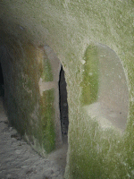
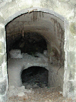
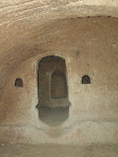
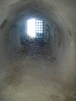

|

Elles sont sèches et saines, il y a
seulement quelques algues microscopiques qui se
développent sur les parois éclairées
depuis que les portes ont disparu.
|

Les caves se superposent et communiquent souvent.
|

Trois caves en enfilade, tout est creusé
dans le rocher.
|

Elles ont été conçues de
manière à ce que le jour entre presque
jusqu'au fond lorsque les portes sont ouvertes.
Fin de la visite.
|